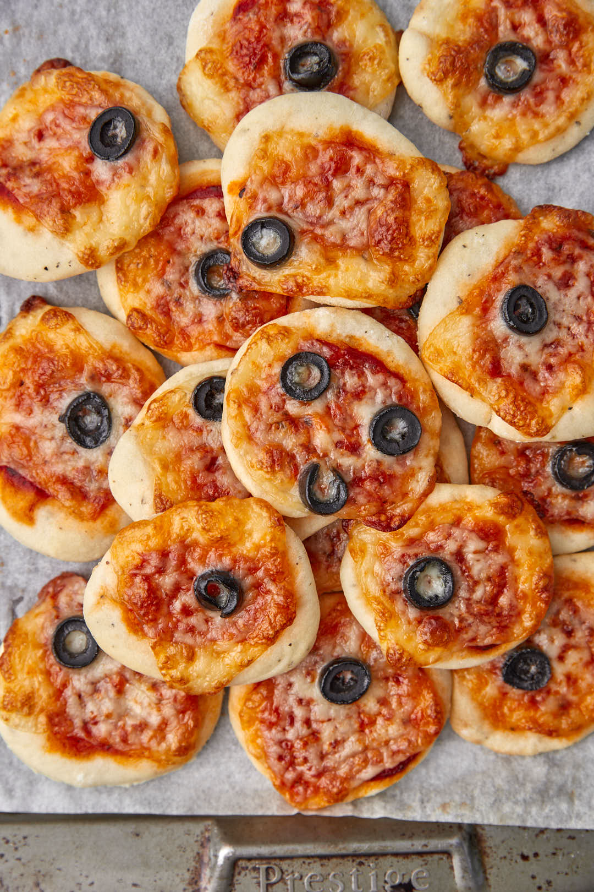

Homemade Mini Pizzas
Return to Home

Check out these delicious Homemade Mini Pizzas!
These homemade mini pizzas are a quick and tasty treat, featuring soft dough circles topped with rich tomato sauce, gooey cheese, and your favorite toppings. Baked to perfection, they're perfect for snacks or parties!
Ingredients:
- 30cm pizza base
- 1 tbsp tomato paste
- 1/2 cup grated mozzarella cheese
- 1/4 cup sliced olives
Steps:
- Preheat oven to 200°C/180°C fan-forced. Lightly grease a large baking tray. Using a 7cm-round cutter, cut 8 rounds from pizza base. Place rounds on prepared tray.
- Spread each round with 1/2 teaspoon tomato paste. Top with cheese and olives. Bake for 10 minutes or until cheese has melted and base is crisp.
- Remove the mini pizzas from the oven and let them rest for 5 minutes.